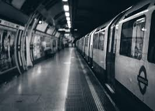
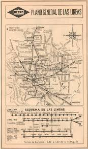
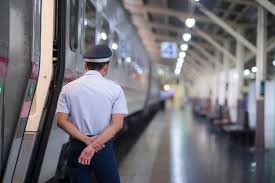
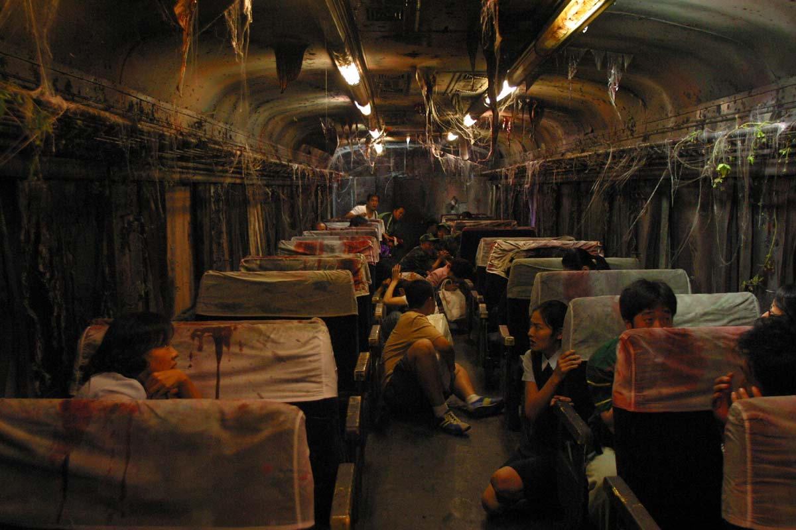
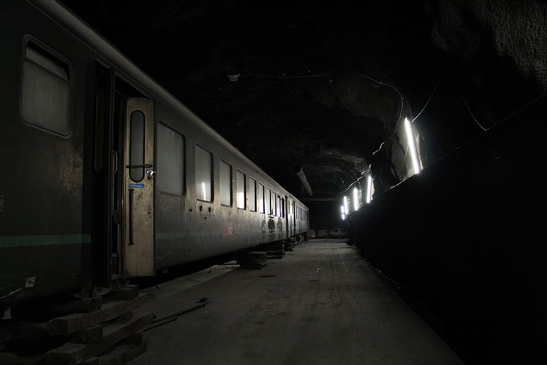

un lugar que no esta en el mapa, pero siempre encuentra pasajeros
Inicio
Mapa del metro
Siempre han existido mapas de las lineas de las estaciones del metro. Igual en Luxus, un pueblo pequeno donde
todos los mapas terminaban en la estacion numero 8. Siempre fue asi y nadie tenia dudas ni razones para dudar
de ello. Ademas, los tableros que indicaban el numero de estaciones coincidian con la cantidad indicada en el
mapa. Luis, el guardia nocturno, llevaba quince anos trabajando en el metro y habia visto muchas cosas que
pasaban durante sus turnos matutinos. Habia visto ratas enormes, apagones repentinos, borrachos tirados en
los pasillos y muchas otras cosas que, para ese tiempo que llevaba, le resultaban muy cotidianas de ver, pero
lo que no imaginaba era que el turno de esa noche seria especial.


Desarrollo
El ultimo tren
Esa noche Luis vio el ultimo tren que arribaba a la estacion 8. El tren se detuvo, abrio sus puertas y
bajo un viejo pasajero que parecia no haber visto nunca antes. Vestia ropas como de un guardia, pero con
un uniforme muy antiguo. Este se le acerco y le dijo con una voz muy cansada y tenue: "Jamas te acerques al
siguiente tren". La persona se alejo lentamente sin mencionar nada mas, desapareciendo en la oscuridad de
la noche. Luis penso que se trataba de un pasajero ebrio, como de costumbre. Y aunque sintio una situacion
extrana en el ambiente, esta se le paso con una breve sacudida de manos, ya que sabia que ese era el ultimo
tren de la noche. Habia pasado media hora desde que habia visto al extrano pasajero cuando vio a lo
lejos unas luces como las de un tren acercandose a la estacion, y penso: "Que raro, el ultimo tren ya paso
hace rato". Pero no le dio mucha importancia hasta que se dio cuenta de que el tren se detenia en la estacion
y que las puertas se abrian. De ellas bajaba un grupo de personas con ropas muy viejas y desgastadas.
Parecian ser trabajadores del metro de hace muchos anos atras, y aunque parecian estar perdidos y
confundidos, no mostraban miedo ni sorpresa por estar en ese lugar. Simplemente caminaban sin rumbo
fijo por la estacion. Luis se acerco a ellos para preguntarles si necesitaban ayuda o algo, pero
ninguno de ellos le respondio ni siquiera lo miro. Simplemente siguieron caminando sin decir nada.
Luis se quedo parado por unos segundos y noto que el tren lucia muy viejo y desgastado, asi que decidio
acercarse para ver si podia hablar con el conductor.



Las imagenes que se muestran son reales: se trata de la ultima imagen del guardia con vida durante su turno
nocturno matutino. Ademas, se presenta la imagen de los pasajeros del ultimo tren, donde se ven como zombis,
y por ultimo se muestra la imagen del ultimo tren llegando a la estacion #8 con su aspecto viejo y desgastado.
Desenlace
El amanecer
Antes de llegar a la cabina del conductor, el tren cerro las puertas y comenzo a avanzar,
asi que Luis corrio mas deprisa para llegar donde el conductor estaba. Al llegar, el horror recorrio su cuerpo,
pues no habia nadie en la cabina, solo un destino en la pantalla de los controles del tren que decia "Estacion 9".
A la manana siguiente, el pueblo desperto con una noticia lamentable: Luis, quien llevaba anos trabajando en la
Estacion 8 del tren, habia desaparecido sin dejar rastro alguno. La policia y los habitantes del pueblo comenzaron
una larga busqueda, pero jamas fue encontrado. Al revisar las camaras de seguridad, se ve a Luis caminar por las
lineas ferroviarias vacias y desaparecer en la oscuridad de la noche para jamas regresar.